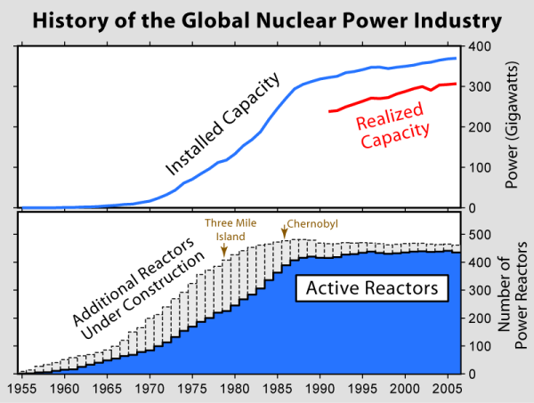
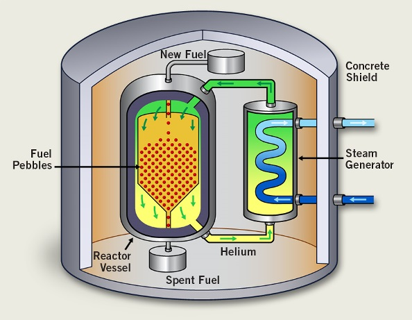
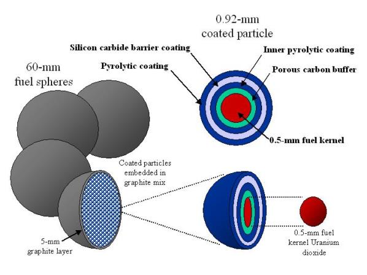

2015-05-07 20:58:00

50、60和70年代是核能发电的黄金时代，在欧美日等先进工业国家有几百座第一代和第二代的核电厂建成上线。1979年的Three Mile Island Accident（三哩岛事件）和1986年的Chernobyl Accident（车诺比事件）是极重要的转捩点，此后20年核电工业的增长基本停顿，少数新建成的反应炉只够替代退役的反应炉；所以总数量停滞在400多座，一直到近十年才因中共的能源政策而重新进入成长期。
我在前文《核动力在军用与民用之间的差别》曾讲过一些核电反应炉的设计和歷史，如果读者不太熟悉这方面的题材，请先复习那篇文章。我在那里也提到了高温气冷堆（Pebble Bed Reactor），今天主要对它做个简单的介绍。
首先澄清一下核能发电的代别：最早的设计，不论是压水式（主环路靠高压使水完全不能沸腾）还是沸水式（主环路容许水的气态），都没有对安全备分做足够的考虑，所以后来改进之后，就分别称为第一代（如Chernobyl）和第二代（如日本的福岛，所有美国目前在运行的核电厂和台湾的核一、核二、核三）。压水式和沸水式反应炉最大的危险在于若是冷却水主环路失灵，那么即使中子吸收棒被放到“全关”的位置，之前裂变產生的放射性元素仍然会继续裂变而產生过多的热量，最终会把整个炉心熔化掉（Reactor Core Meltdown），极高温的放射性金属熔浆有可能会烧穿反应炉的水泥地基而渗入地下水层，将大量危险的放射性同位素（一般是像碘131这种短半衰期的裂变產品放射性危害最强，而碘进入人体之后会聚积在甲状腺，所以上次福岛核灾后有谣言叫灾民多吃碘）释放到外界，因此这两类反应炉的安全设备主要专注在保障冷却水主环路持续流通。第二代的核电厂普遍使用柴油发电机在停机时驱动主泵，确保冷却水的循环。后来三哩岛事件使设计厂商开始认真检讨所有可能出毛病的环节，就有人提出柴油发电机并不是100%的可靠（例如福岛在海啸之后，自然是反应炉和柴油机一起泡汤），于是在1980年代西屋、GE和法国的Areva都开始研究完全不需电力供应的冷却方法，这就是第三代反应炉。不过要在没有电力供应的条件下保持无限期的冷却水循环违反了能量守恒定律，所以先天上就是不可能的。工程上的解决办法只能把一个大水池建在屋顶，利用重力来推动循环，那么当这池水用完以后，反应炉仍然会熔毁。目前的设计一般是保障七天左右，在这段时间内，维修人员必须重启电力供应。这在天灾情况下应该是做得到的，在战争人祸的情形下就很难说了。
至于所谓的第四代反应炉，则是对所有把压水/沸水式完全推倒重来的设计的通称，包括了好几种截然不同的构想。但是由于传统的压水/沸水式在工程投入上有70年的领先，所以这些新设计必须有根本性的优势，否则不可能有人愿意投资几百亿美元来做开发。目前只有两种设计满足这样的要求，分别是高温气冷堆和快滋生反应堆（Fast Breeder）：前者专注在安全性，保证绝不熔堆，而后者则可以用来做元素嬗变（Elemental Transmutation），最主要是将铀238变成钸239。从商业观点上来看，只有前者有真正实用上的价值；快滋生反应堆生產的钸刚好是核子武器的最佳原料，只有军方和日本政府（日本自中曾根康弘首相之后便开始积极囤积钸239，所用的藉口是把钸和铀混合成MOX核能燃料；正因为有这个偷偷摸摸的任务，日本的核能监管单位对电力公司不能做严格的审查，最后间接导致福岛核灾）才会有兴趣冒经济和安全上的风险。
高温气冷堆最早是1943年美国的Farrington Daniels在Oak Ridge实验室所做的一个实验，不过一直到1960年才在西德由Rudolf Schulten主持，开始实际的工程设计与建设。Schulten的反应炉叫做Arbeitsgemeinschaft Versuchsreaktor（Joint Experimental Reactor，联合实验反应堆），简称AVR，1967年建成并网发电，电功率为15MW。1986年车诺比事件后，西德对核电开始有疑虑，AVR也受到严格的监督。1988年发生了一个小事故（燃料球卡在出口），在处理的过程中释放了很少量的放射性尘埃（燃料球的外壳不够强，以致破裂），但是当时的民情已经不容许任何放射性灾害，于是AVR被关闭，德国政府花了26年来清理现场并检讨整个经验，到2014年才大功告成，发布了报告。Schulten原本已经准备开建下一代的高温气冷堆，叫做HTR-MODUL，其改进的重点是针对AVR的几次事故（70年代的事故被遮掩到2000年代才发现）重新设计反应室出口和燃料球；新燃料球在1988年正要开始试產，结果全部生產线必须作废。但是中共有极佳的先见之明，在1970年代末就已经从清华派了学者和学生去参加Schulten的团队，团队被解散之后，他们说服中共当局，以极低的价格买下了智慧產权的执照和图纸（南非也买了执照和图纸，但是没有什么大进展，2010年正式放弃），并且把燃料球生產线带回清华。1995年中国版的HTR-MODUL（改称HTR-10）在清华校园开建，2000年建成并网，电功率为10MW。2005年商业版的示范堆在山东石岛湾开建，预定2017年完成，双机并联，总电功率为200MW（参见前文《中共国营企业的改革》）。
HTR-10的示意图，可以看出高温气冷堆的结构极其简单，基本上就是一个大沙漏里装了几十万个燃料球，既没有中子减速剂，也没有中子吸收棒，完全不须在炉心使用机械装置。这是因为所有的功能都集中到燃料球本身，停机靠的是物理性质而不是工程手段。冷却环路用的是氦，因为氦的腐蚀性和放射吸收性都是零。既然氦不会吸收放射性，理论上就可以用主环路直接驱动涡轮，从而获得更高的热效率。但是在摄氏950度用氦推动的涡轮此前没有现成的应用，必须从头开发，而中方的涡轮技术并不太强，所以清华团队很明智地选择了使用第二环路来推动蒸汽涡轮的方案，这也避免了燃料球破裂后，放射性尘埃污染涡轮的危险。如此一来，高温气冷堆的真正技术难关就完全集中到燃料球本身。燃料球是Schulten的发明，不同的高温气冷堆视设计功率需求决定放多少个燃料球；一般是几十万个。每个燃料球直径为60mm（比网球略小一点），最外层是5mm厚的强化石墨；中心的馅儿直径50mm，由八千个燃料粒和石墨混合而成。石墨是很好的中子减速剂和热导体，并且可以耐热到摄氏2800度；而高温气冷堆受核子物理的天然限制，炉心温度不可能超过摄氏1600度，一般工作温度在摄氏950度左右。燃料粒直径为0.92mm，由四个保护层包裹直径0.5mm的二氧化铀燃料而成。石墨和氦都不会吸收放射性，所以燃料球用完后，本身就是围阻体，可以简单装箱掩埋，无需另外的机械或化学处理；不过废料总体积会增加。
高温气冷堆的功率控制和绝不熔堆的保证，来自一个很特别的核子物理性质：裂变產生的快中子（Fast Neutron）和石墨原子核碰撞之后，损失动能，成为慢中子（Thermal Neutron）；而其他铀235原子核吸收慢中子（这就是所谓的连锁反应，Chain Reaction；铀238原子核刚好相反，喜欢吸收快中子而不管慢中子；高温气冷堆的石墨减速剂比压水/沸水式用的轻水有效，所以铀235不须被浓缩到同样的5%浓度，甚至只有0.7%是铀235的天然铀在理论上都可以用）而引发新的裂变的截面积（亦即机率）随温度增高而减小，在摄氏1000度以上减小得很快。所以要停机，只须要把主环路的氦气风扇关掉，让炉心温度逐步升高到摄氏1600度，连锁反应就基本停止了。这时铀即使熔化，因为它被包在燃料粒里，也不会泄露。既然关掉主环路里的氦气循环是正常运作的一部分，那么在天灾或故障时失去电力供应，也就没什么大不了的。
高温气冷堆之所以至今没有普及，主要是经济上的问题。它虽然结构很简单，但是在工程设计上远不如压水/沸水式成熟，所以第一代的发电站仍然故障不断，没有经济效益。此外它的功率密度很低，反应炉心占地900立方公尺，比压水式的30立方公尺（这还是民用反应炉，包括了更换燃料棒的机制；核潜艇用的更小得多）大30倍，功率反而只能做到100MW，而最新的压水式已经达到1400MW。清华的设计是两个反应炉共推一个蒸汽轮机，合起来成为一个模组。理论上模组和燃料球都可以大规模生產（清华自己的生產线年產量10万枚，现在正在包头市建设年產30万枚的工厂），长期下来成本有可能压低到远比压水式还低；但是这里有一个很大的不确定性，也就是高温气冷堆核电站是否需要传统的紧急事故处理设备，例如厂房安全壳。压水/沸水式因为有炉心熔毁的可能，安装反应炉的厂房本身也必须是特别设计的气密安全壳（当然因为冷却水沸腾时可以產生爆炸性的力量，两层安全壳仍然不足以保证绝对的安全；而高温气冷堆用的氦气是不会爆炸的）。如果高温气冷堆也必须建昂贵的厂房安全壳，那么因为它的功率密度低，安全壳就必须建得更大，而且必须在气密的同时提供气冷，费用反而会更高得多。如果因为高温气冷堆的安全性而省略了紧急事故处理设备，那么它很快就会比传统的核电厂便宜，甚至可以直接替换掉煤电厂的旧锅炉，沿用现成的蒸汽涡轮。
所以虽然高温气冷堆的安全性已经远高于传统式的核电站，它的前途还是决定在这个安全性到底高到哪里。歷史上AVR的麻烦主要在于燃料球卡在出口，而在处理的过程中有燃料球破裂。原本燃料粒本身已经有四层防护，所以燃料球破裂应该也没关系；但是年產30万枚燃料球，每个球有8000个燃料粒，那就是24亿颗燃料粒。目前的工艺可以保证99.999%的良率，但是即使再提升一个数量级，也就是达到了99.9999%的良率，仍然会有2400颗破损的燃料粒，当那2400枚含问题燃料粒的燃料球破裂时，就会有可能泄露放射性尘埃。不过一颗燃料粒只含0.7mg的铀，所以这样產生的尘埃是相当微不足道的。
在最坏的可能情形下，也就是当外力（例如天灾、飞弹攻击或厂房失火/爆炸）打破反应炉，氦气外泄，空气进入反应炉，那么高温的石墨会自行点燃，放射性污染就有可能会随烟尘而散布（不过燃料粒的外层有Silicon Carbide，这种陶瓷材料不但坚硬、耐高温，而且不易燃）。虽然有电脑模拟，显示因为燃料球堆积很密，燃烧会有困难，但是这是假设厂房基本完整；如果厂房已经崩塌，氧气的供应就可能足够引发大火。当然以这个脚本来判断安全性是很不公平的，所有其他的核电反应炉设计在同样情形下，放射性污染都会比高温气冷堆高出好几个数量级；问题在于分析了风险回报之后，是不是可以省略一些紧急事故处理设备（石岛湾似乎就省略掉了厂房安全壳，但是因为有传统的反应堆在隔壁，其他处理紧急事故的软硬体设备都是现成的；但是高温气冷堆的经济性只有在脱离传统核电厂之后才能显示出来）。很不幸的是，一般民眾没有风険的概念，往往在被传播媒体有意无意中伤的新科技上，为了极小的风険而因噎废食；而旧有的工业技术，却因为有既得利益者（如石油财团）护航，可以每年害死几万人而没有媒体敢讨论（如烧煤和烧油的空气污染，造成每年全球因肺癌死亡的人数，就远超过人类歷史上因核电意外而死亡的总人数，这还不考虑全球暖化的后果）。所以只有理性的政府才能做出理性的最佳决定，而台湾的民主政体却是绝对反理性的。